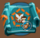
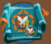
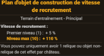
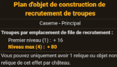

Objets de construction
Les objets de construction permettent d'améliorer des effets de bâtiments (prod de ressources), d'effet de commandants (+% de force) et parfois d'ordre publique.
Les objets de construction sont disponibles dans n'importe quel château, à condition que le chantier soit construit.

Il y a plusieurs façon d'accéder à ces objets :
- Construire l'objet dans le chantier avec des matériaux de construction
- Rechercher l'objet dans la tour de recherche avant de pouvoir le construire
- Gagner l'objet dans un event
- Acheter l'objet chez le maître-forgeron/boutique d'event
Il y a un nombre important d'objets, ceux-ci ayant des fonctions variées : militaire, prod, ordre publique...
Chaque bâtiments possède trois emplacements pour des objets de construction :

Un emplacement principal, un emplacement d'aspect et un emplacement de relique.
emplacement principal
emplacement d'aspect
emplacement de relique
Il y a plusieurs façon de classer les objets. Par leurs effets, la catégorie de bâtiment à laquelle ils s'appliquent voire à la façon dont on peut les acquérir.
Objets militaires (tour de recherche) :



